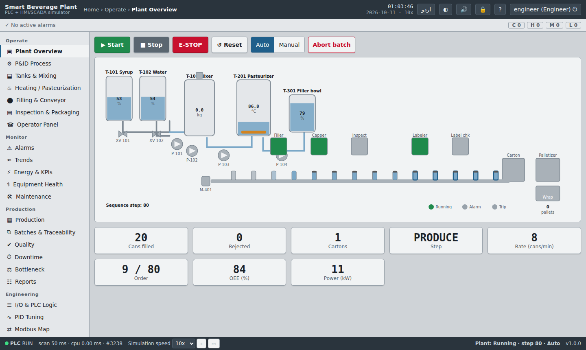
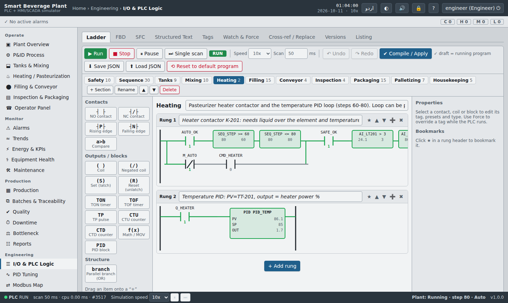
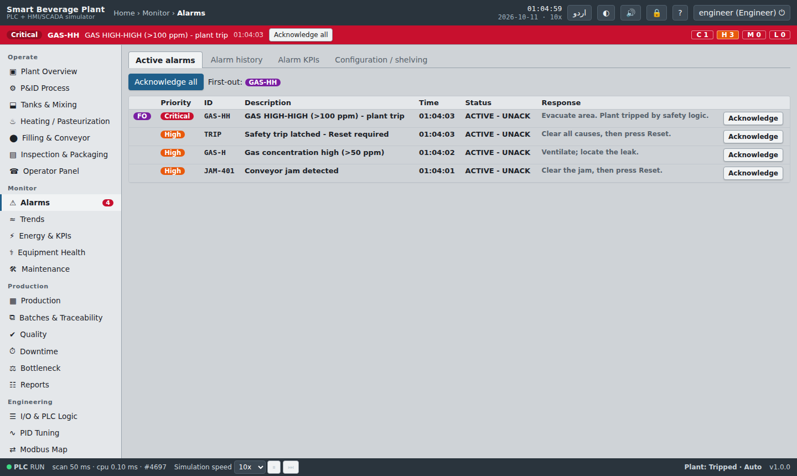

Smart Beverage Filling & Packaging Plant
PLC + HMI/SCADA Simulator
A complete plant in your browser: a real PLC scan-cycle engine, an editable ladder diagram with live power flow, a physical process model, and an ISA-101 style SCADA with ISA-18.2 alarm management. Static site — no backend, no install.
The process
Every stage is simulated and controlled by the ladder program, from raw material to wrapped pallets.
Features
Built to show real PLC and SCADA engineering practice, not just animation.
PLC scan-cycle engine
Read inputs → execute logic → write outputs with adjustable scan time. NO/NC contacts, edge contacts, coils, set/reset, TON/TOF/TP, CTU/CTD, comparators, math, PID, interlocks and a state-machine sequencer.
Editable ladder editor
SVG ladder with live power flow and live timer/counter values. Drag & drop, parallel branches, undo/redo, online edit with a Compile/Apply check, JSON save/load, FBD, SFC/GRAFCET and Structured Text views.
ISA-101 HMI / SCADA
Animated overview, P&ID with ISA symbols, faceplates, PID tuning with auto-tune demo, trends with historian zoom/pan, light/dark theme, English/Urdu, mobile operator panel, screen lock and auto-logout.
ISA-18.2 alarms
Four priorities, acknowledge states, shelving, suppression, first-out, flood detection, alarm KPIs and a cause & effect matrix tied to the real interlock logic.
Production & quality
Recipe manager, production orders that stop the plant at target, batch genealogy with carton/pallet barcodes, SPC, reject reasons, downtime Pareto, bottleneck analysis, OEE.
Energy & maintenance
kWh per machine, cost per batch with an editable PKR tariff, peak demand, power factor, equipment health with predictive warnings and a maintenance schedule.
Engineering tools
Tag database with CSV, watch & force tables, cross-reference, tag search/replace, version snapshots with compare/restore, printable listings, Modbus TCP map and frame builder, audit trail.
Training mode
One-click fault scenarios (sensor failure, pump trip, power loss, jam, overheating, gas leak, empty tank) with the expected PLC response, guided exercises with a score, and a first-launch tour.
Architecture
PLC, HMI and field devices are separate modules that talk only through the tag database — like a real control system.
Tech stack & highlights
No frameworks, no build step, no backend. Open index.html directly or host it on GitHub Pages.
- Works offline once installed as a PWA.
- Process model and PLC are decoupled: only tags connect them.
- Automated self-tests for engine, interlocks, alarms and counters.
- Feature flags in
js/config.jsswitch modules on or off.
Screenshots
Replace these placeholders with your own screenshots or a GIF: save files as assets/screenshots/overview.png etc. (see README).

assets/screenshots/overview.png'}))">
assets/screenshots/ladder.png'}))">
assets/screenshots/alarms.png'}))">add
assets/screenshots/demo.gif and replace this box with an <img> tagAbout
Zaheer Abbas — Electrical Engineer, FAST-NUCES.
I build and commission control systems, and this project shows how I think about them end to end: logic design, interlocks and safety, operator experience, alarm philosophy, production data and testing. It is meant to be explored — try the fault scenarios and edit the ladder while the plant runs.
Contact
Edit these links in index.html before publishing.